지구도 지키고, 아이도 지키는 착한 지구꽃가방!
#지구꽃가방 # 최희진픽 #여름가방 #기후위기 #데일리룩- 배우 최희진
-
월드비전 해외 기후 위기 대응 캠페인
With 배우 최희진
기후 위기로 메마른 땅에 살아가는
후원하고 지구꽃가방 받기
아이들 삶을 지구꽃가방으로
함께 꽃 피워 주세요.
With 배우 최희진
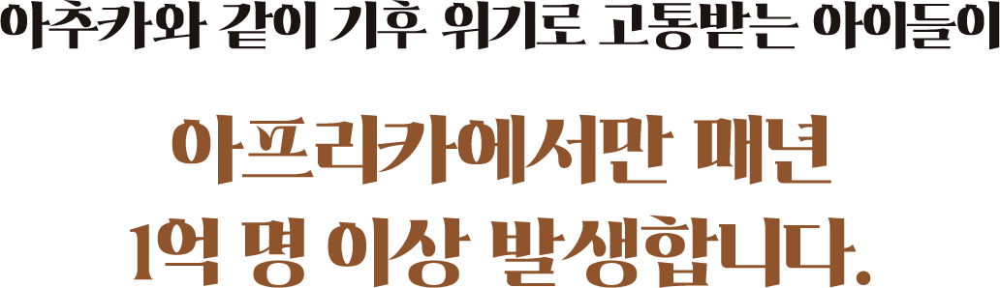
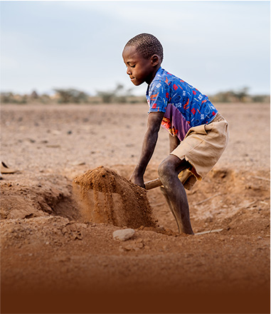
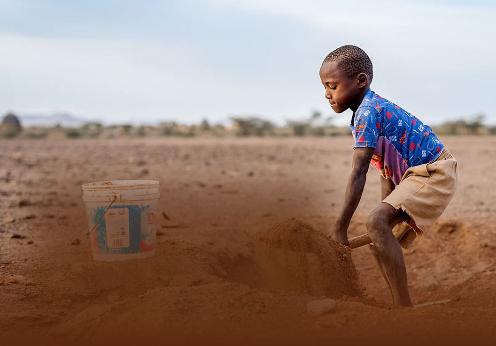
기후 위기로 노동에 내몰리는 아동
약 1억 6천만 명 (ILO & UNICEF, 2025)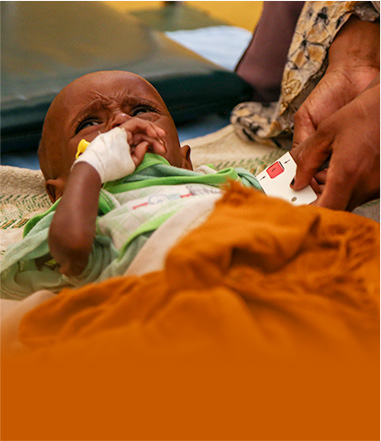
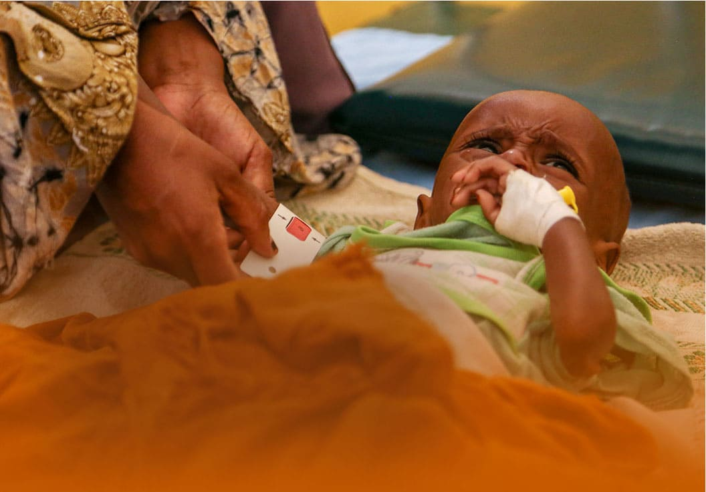
기후위기로 인한 영양실조 아동
2,700만 명 (WFP & UNICEF, 2025)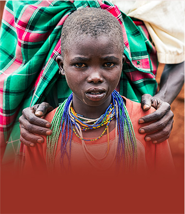
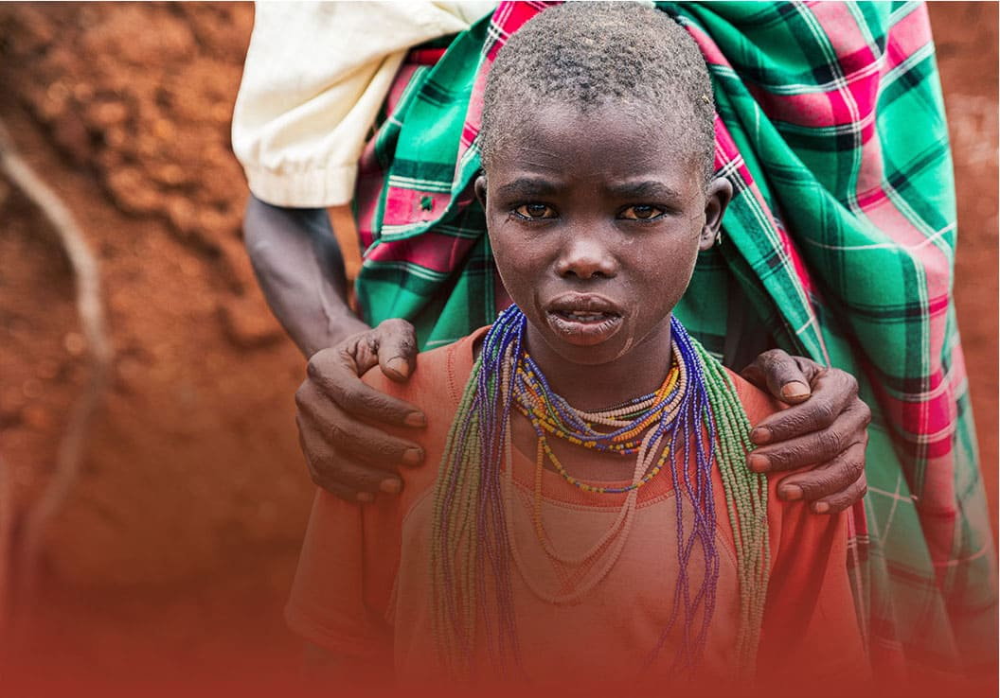
기후 위기로 인한 조혼 여아
매년 900만 명 (Save the Children, 2023)지구꽃가방은
기후 위기로 고통받는 전 세계 아이들의 삶에
희망을 심는 상징을 담고있어요.
버려진 페트병 16개에
새로운 숨결을
불어넣어
지구꽃가방 1개가 완성됩니다!
Look Book
지구도 지키고, 아이도 지키는 착한 지구꽃가방!
#지구꽃가방 # 최희진픽 #여름가방 #기후위기 #데일리룩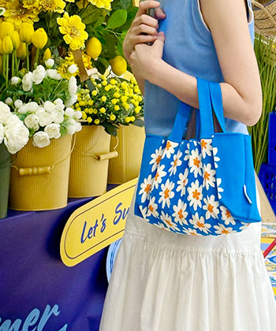
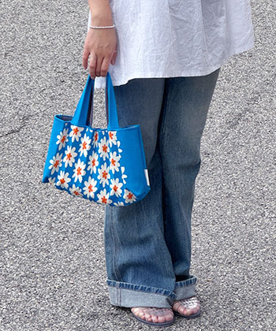
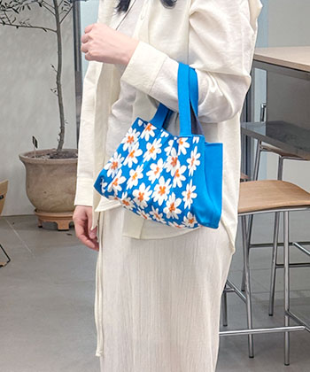
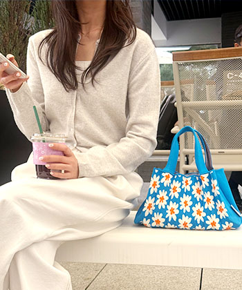
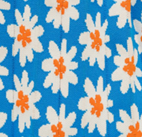
시원하고 탄탄한 소재로
짜여진 니트백 이에요!
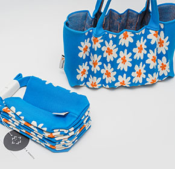
간편하게 접었다 폈다
할 수 있어 휴대가 쉽고,
수납력이 좋아요
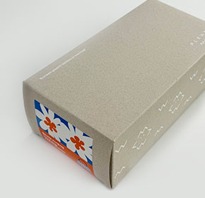
환경을 생각해
생분해성이 좋은 재생 용지로
패킹 박스를 제작했어요
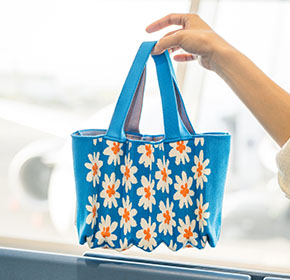
가로 25cm, 세로 17cm,
폭 12cm로 보조배터리,
접이식 우산, 책, 파우치를
담을 수 있어요!
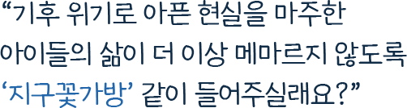
후원에 참여해 주신 분들께 감사의 마음을 담아
리사이클 브랜드 플리츠마마와 함께 제작한
지구꽃가방을 드립니다
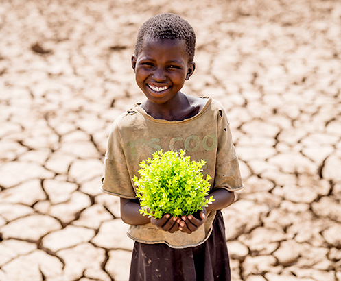
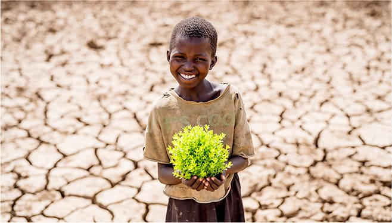
아이들과 마을 주민의 삶을 지키기 위해
월드비전은 아래의 기후변화대응사업 노하우로
지난 21년간 서울 전체 면적 20배가 넘는
120만 헥타르 토지를 복원시켰습니다.
<다시, 꽃피울 지구> 캠페인을 통해 해외사업을 정기후원하시면 가방 1개를 발송해 드립니다. 아이들에게 지속적인 변화를 만들기 위해 정기 후원으로 동참을 부탁드립니다.
해외사업후원 1건당 가방 1개가 발송됩니다.
기존 정기 후원으로 함께해 주셔서 감사합니다. 아이들의 건강한 내일이 꾸준히 지속될 수 있도록 추가로 정기후원을 신청하시면 지구꽃가방을 받으실 수 있습니다.
지구꽃가방은 버려진 페트병을 재활용한 친환경 원사 ‘리젠 코리아(regen korea)’로 만들어졌습니다. 가방 1개당 16개의 페트병이 재활용되며, 지속 가능한 패션을 위해 자투리 천이 남지 않는 홀가먼트 방식으로 제작됩니다.
아래 사진을 참고해 주세요. 니트와 플리츠 디자인 특성상 제품의 가로, 세로 사이즈는 유동적으로 늘어납니다.
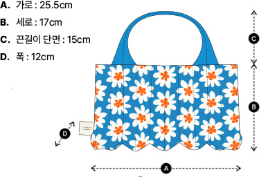
지구꽃가방은 첫 후원금 납부일 기준 3주 이내에 받아 보실 수 있습니다. 만일 결제 정보 오류 등의 사유로 첫 후원금이 납부되지 않는 경우 가방이 발송되지 않으니 이 점 확인 부탁드립니다.
후원 신청 시 입력하신 주소로 발송됩니다. 주소지 오기입으로 인한 재발송은 어려우니 후원 신청 시 정확한 주소를 입력해 주세요. 배송지 변경은 월드비전 홈페이지 또는 대표전화(02-2078-7000)를 통해 가능하며, 발송 시작 안내 연락을 받으신 이후에는 배송지 변경이 어렵습니다.
후원 신청 완료 후, ①단순 변심 ②분실 ③사용 중 생긴 손상의 경우에는 교환 및 반품이 어렵습니다. 불량의 경우, 수령 후 1개월 이내 월드비전 홈페이지 또는 대표전화(02-2078-7000)로 연락 주시면 이후 프로세스를 안내해 드립니다.